Audio Basics
SPLICE Academy 2019
What is sound?
All musicians work with sound.
Yet, most musicians have little understanding of its properties.
We can all benefit from an understanding of:
- how sound works and moves
- how we measure it (objective)
- how we perceive it (subbjective)
Acoustics : The science of sound, or a general term to refer to hearing and sound
What is sound?
When we toss a pebble into water, we see a splash, followed by ripples ringing out from the splash point.
We hear a sound when there is a "splash" in air.
Instead of water rippling away from the splash point, a sound event pushes air molecules to bump into one another.
After the molecules collide, they bounce away from each, other colliding with other molecule
What is sound?
What is sound?
What is silence? The absence of sound.
Silence happens when the air is undisturbed.
We call this equilibrium.
What is sound?
When a sound happens it disturbs the air.
This causes the density of air molecules to alternate between bunching together and spreading out.
What is sound?
When the bunching together and spreading out alternates quickly enough we perceive is as sound.
Compressed State: Air molecules at higher pressure levels (greater density) than equilibrium
Rarefied State: Air molecules at lower pressure levels (greater density) than equilibrium
What are sound waves?
Sound is a sequence (or oscillation) of compressions and rarefactions in air pressure that we perceive as sound.
Sound waves propagate outwards in expanding spheres.
Time Domain Plots
Sound waves are often illustrated on a graph that plots sound pressure over time.
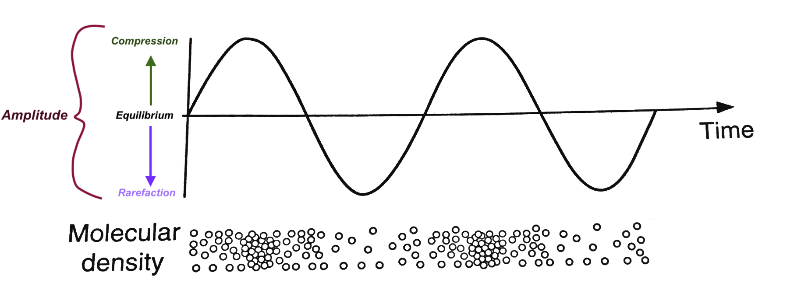Physical Characteristics of Sound Waves
- Wavelength: the distance between similar points on a sound wave
- Frequency: how often (or quickly) the wave repeats itself
- Amplitude: how high and low the wave's oscillations are.
- Waveshape: the shape of the pressure changes on a time domain plot (we will dig into this later in the semester)
- Polarity: a wave's up or down orientation.
Each sound event creates its own unique combination of the above physical characteristics.
Properties of Musical Sounds
A musical event can be described by four properties. Each of these can be explored with descriptive terms (or objective terms)
- Pitch (Frequency)
- Volume (Amplitude)
- Timbre (Frequency Response/Spectrum)
- Duration in beats (Duration in Time)
Frequency/Pitch
- Frequency is how rapidly the air pressure oscillates between rarefactions and compressions
- We measure frequency in cycles per second or Hertz (Hz)
- How Humans perceive pitch is correlated with frequency.
Frequency/Pitch
- The faster the frequency is the higher we perceive pitch 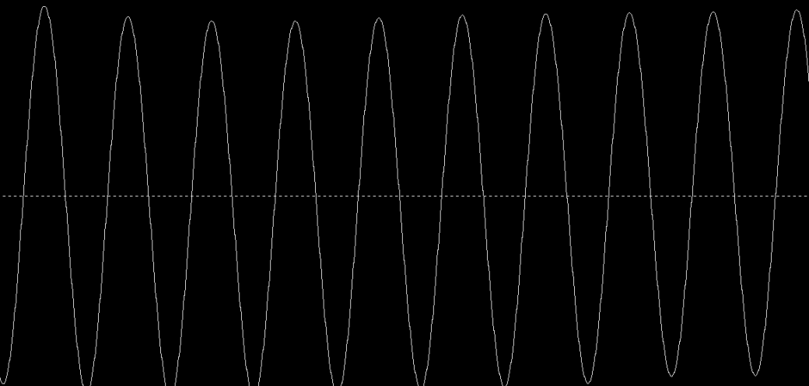
Frequency/Pitch
- The slower the frequency is the lower we perceive pitch 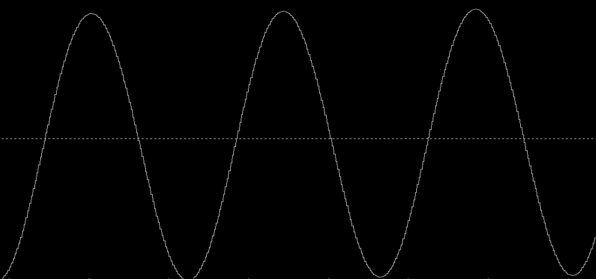
Frequency/Pitch
- The range of human hearing is roughly from 20 Hz to 20,000 Hz
- More often written as 20 Kilohertz (kHz) (Metric prefixes can apply to Hz)
- The upper limit decreases with age and ear damage (most adults are in the 16-17 kHz range)
- Let's test our hearing range
Amplitude/Volume
- As discussed earlier, amplitude is the amount of deviation in the air pressure from equilibrium
- Amplitude is perceived by humans as loudness and softness
Amplitude/Volume
- The less the amplitude is the softer we perceive the sound 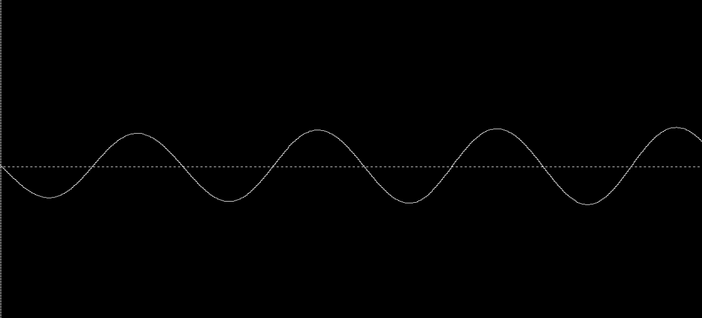
Amplitude/Volume
- The more the amplitude is the louder we perceive the sound 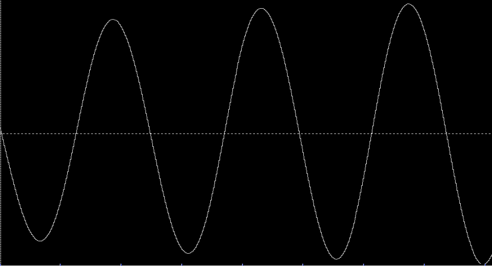
Sine Tone
- Sine Tone: A perfectly periodic cycle that produces a single frequency
- Sine tones very rarely occur naturally.

Compare these two sound waves in terms of frequency and amplitude
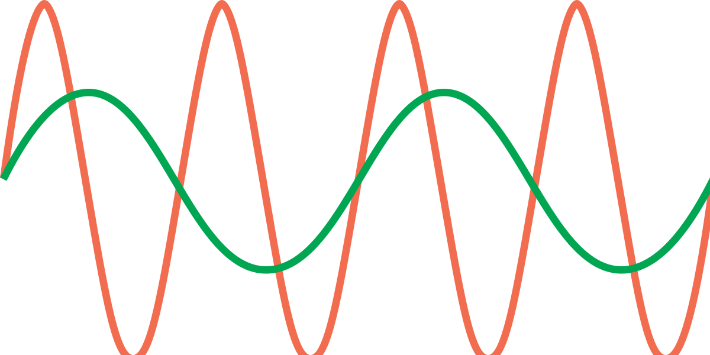Timbre/Spectrum
- A given sound will contain many different frequencies, all at different amplitudes
- Spectrum: is the set of frequencies in a given sound 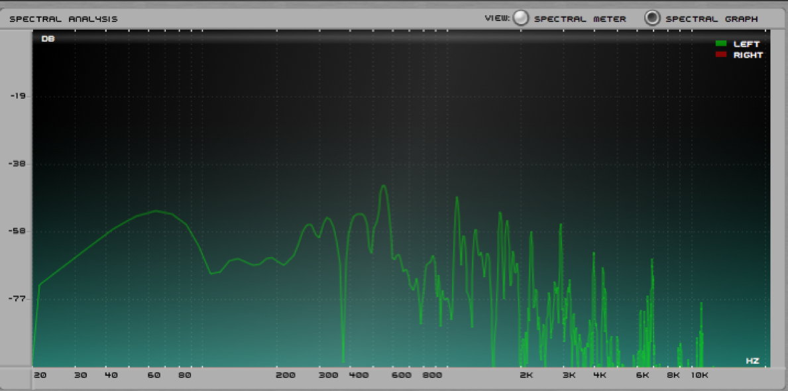
Analog Audio
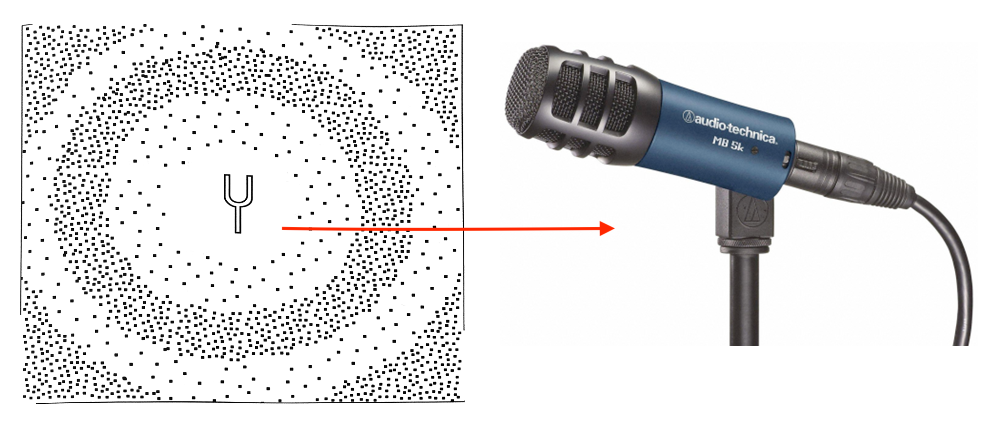Analog Audio
A microphone takes sound and turns it into electricity.
Changing one type of energy (acoustic) into another (electricty) is called transduction.
This lets us change and work with sound in many interesting and useful ways.We can use the same kind of graph to show analog audio.
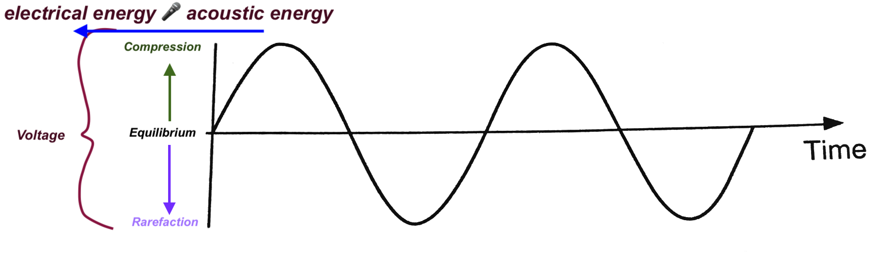Digital Audio
After we transduce acoustic energy to electric energy, we can convert the analog signal to a digital signal.
Then we can store, reproduce, combine, and manipulate digital audio signals
THE PROBLEM: Analog audio is a continuous wave of energy, and computers can only handle discrete values.
Digital Audio
THE SOLUTION: Digital audio systems take rapid snapshots of the amplitude (voltage) of an audio signal. This is called sampling.
But, it can only do this every so often, not continuously, it is discrete
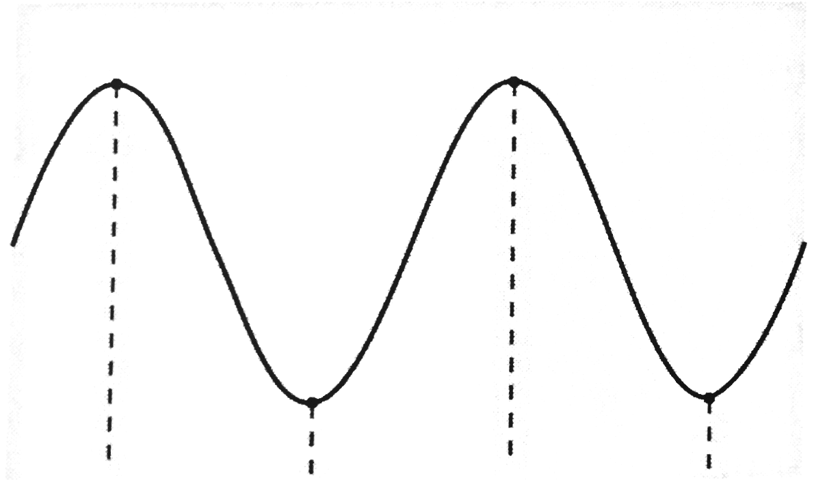Sampling Rate
The speed at which the samples are recorded is the called the sampling rate
The sampling rate is measured in hertz (the number of samples per second)
Common sample rates are:
- 44.1 kHz
- 48 kHz
- 88.2 kHz
- 96 kHz
Sampling Rate
- The sampling rate determines the highest frequency a digital audio system can correctly represent
- The highest frequency that can be accurately represented is the sampling rate/2: this frequency is called the Nyquist frequency
- Since higher range of hearing is about 20 kHz, 44.1 kHz is sufficient
- This is because 44.1 kHz/2 = 22,050 Hz
- If 44.1 kHz is sufficient, why are there higher sampling rates?
- Spatial Location
- Higher Detail (More accurate representation of the analog signal)
- Remember: the sampling rate determines the highest frequency that can be accurately represented
Sample size, or Bit Depth
Each time our Digital Audio System takes a sample, it records the amplitude of our analog signal
Because nothing is continuous in a digital system, it can only record certain values.
Sample size, or Bit Depth
- digital audio systems can also not record all amplitudes, only certain amplitudes
- These points can be represented by a horizontal grid
Sample size, or Bit Depth
- The bit depth determines the number of horizontal lines, i.e. amplitudes that can be represented by the digital audio system
Sample size, or Bit Depth
- Common bit depth are 16, 24, and 32
- These do not refer to the number of lines, but are exponents of a binary system
- 16 bit = 216 = 65,536 possible amplitude values
- 24 bit = 224 = 16,777,216 possible amplitude values
Bit Depth
- The bit depth determines the dynamic range of the digital audio system
- Dynamic range is the difference between the quietest sound that can be represented (silence) and the loudest sound
- The higher the bit depth, the wider the dynamic range
- 16 bit audio has a dynamic range of 96 dB
- 24 bit audio has a dynamic range of 144 dB
Digital Audio Errors
Clipping: when the incoming signal exceeds the maximum amplitude that can be represented by the digital audio system terms (or objective terms)
This causes audio artifacts that are generally not desired
The audio that would be smooth, becomes a flat line at the negative and positive limits of the digital audio representation
Clipping
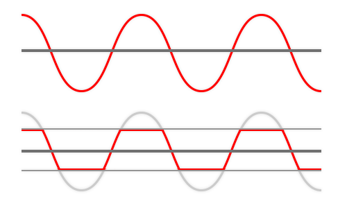Digital Audio Errors
Aliasing: when the incoming signal contains frequencies that exceed the Nyquist frequency
High frequencies require faster sampling times, if the frequency is too high, it will be digitally reproduced as a lower frequency
Aliasing
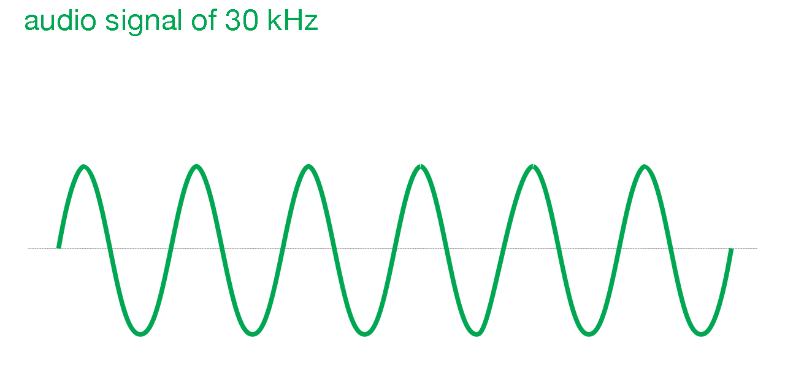Audio File Types
Audio files come in a variety of flavors.
- Uncompressed
- AIFF: Audio Interchange File Format ".aiff" or ".aif"
- RIFF WAVE: Resource Interchange File Format ".wav"
- Compressed
- MP3: A compression technique that allows for small file sizes, severely compromises quality.
The audio that would be smooth, becomes a flat line at the negative and positive limits of the digital audio representation